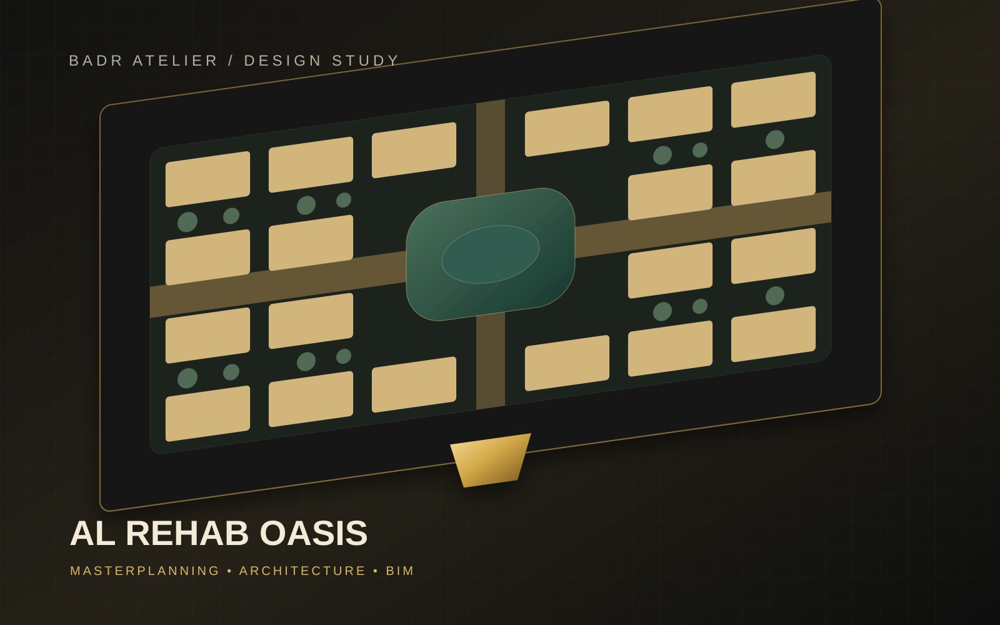
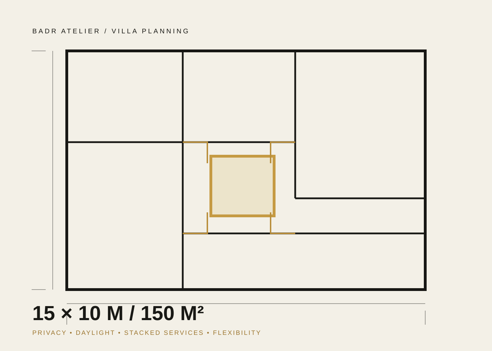
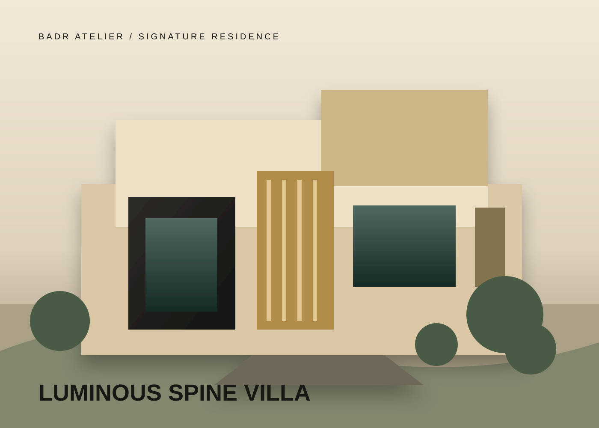
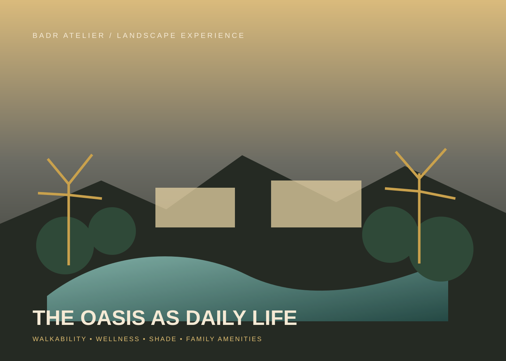

01◇
Luxury Standalone
A premium family villa organized around a luminous internal spine, strong privacy and a signature façade.
A luxury residential development study in Jeddah exploring how villa count, arrival prestige, landscape, family lifestyle and distinctive residential products can work as one commercial design story.

The study explored four masterplan directions: a sales-efficient grid, a central resort garden, a prestige arrival with four signature mansions, and a family wellness spine. Each direction retained the development logic while changing the emotional and commercial emphasis.
The recommended commercial narrative combined the premium price anchoring of the signature entrance units with the deeper landscape and amenity experience of the resort and wellness options.
The typical 15×10 m / 150 m² floor plate was developed into a premium family villa, an independent-floor investment product and a signature vertical-oasis concept.


A premium family villa organized around a luminous internal spine, strong privacy and a signature façade.
Ground, first and penthouse units designed for multi-generational living or investment flexibility within a villa identity.
A market differentiator built around an internal courtyard, sky garden and roof living experience.
The concept uses an entrance + stair + skylight + green wall spine to separate formal, family and private zones without relying on long corridors. A ground-floor master suite improves long-term family usability, while stacked services support efficient coordination.
The preferred direction reinforces the development through a ceremonial arrival, central amenities, family walkability, shade and a daily resort-like landscape experience.

Select the masterplan direction and villa product mix.
Confirm setbacks, parking, fire access, service access and authority requirements.
Refine plots, road geometry, villa modules, amenities and landscape levels.
Coordinate architecture, structure and MEP for development readiness.